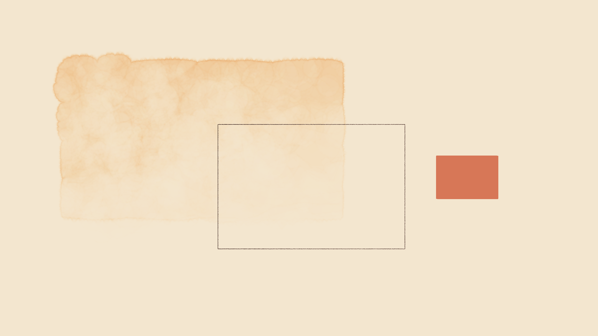

<title>Clawd Video Build Plan</title>
<style>
    :root {
    color-scheme: dark;
    --bg: #0f172a; --card: #1e293b; --text: #e2e8f0; --text2: #cbd5e1; --muted: #94a3b8;
    --orange: #fb923c; --teal: #2dd4bf; --b1: #1e293b; --b2: #334155; --clawd: #D77757; --warn: #fbbf24;
  }
  * { box-sizing: border-box; }
  html { scroll-behavior: smooth; }
  body { margin: 0; background: var(--bg); color: var(--text); font: 17px/1.65 system-ui, "Segoe UI", sans-serif; }
  main { max-width: 980px; margin: 0 auto; padding: 32px 16px 96px; }
  h1 { font-size: 2.1rem; line-height: 1.2; margin: 0 0 8px; }
  h2 { font-size: 1.5rem; margin: 56px 0 12px; padding-top: 16px; border-top: 1px solid var(--b2); color: var(--orange); }
  h3 { font-size: 1.15rem; margin: 28px 0 8px; color: var(--teal); }
  p, li { color: var(--text2); }
  strong { color: var(--text); }
  a { color: var(--teal); }
  .lede { font-size: 1.1rem; color: var(--text2); }
  .meta { color: var(--muted); font-size: .95rem; }
  .card { background: var(--card); border: 1px solid var(--b2); border-radius: 10px; padding: 16px 20px; margin: 16px 0; }
  .card.warn { border-left: 4px solid var(--warn); }
  .card.key { border-left: 4px solid var(--orange); }
  .card.ok { border-left: 4px solid var(--teal); }
  code { font-family: Consolas, "Cascadia Mono", monospace; font-size: .9em; background: #0b1222; border: 1px solid var(--b2); border-radius: 4px; padding: 1px 5px; color: #f8fafc; }
  pre { background: #0b1222; border: 1px solid var(--b2); border-radius: 8px; padding: 14px 16px; overflow-x: auto; font: 14px/1.5 Consolas, "Cascadia Mono", monospace; color: #e2e8f0; }
  pre code { background: none; border: 0; padding: 0; }
  .c { color: #64748b; }
  table { width: 100%; border-collapse: collapse; margin: 12px 0; font-size: .94rem; }
  th, td { text-align: left; vertical-align: top; padding: 8px 10px; border-bottom: 1px solid var(--b2); }
  th { color: var(--text); background: var(--card); }
  td { color: var(--text2); }
  .scroll { overflow-x: auto; }
  nav.toc { background: var(--card); border: 1px solid var(--b2); border-radius: 10px; padding: 12px 20px; margin: 24px 0; }
  nav.toc ol { margin: 6px 0; padding-left: 22px; }
  nav.toc li { margin: 2px 0; }
  figure { margin: 16px 0; }
  figure img { width: 100%; border: 1px solid var(--b2); border-radius: 8px; }
  figcaption { color: var(--muted); font-size: .9rem; margin-top: 6px; }
  .grid18 { display: grid; grid-template-columns: repeat(18, 22px); grid-auto-rows: 44px; gap: 1px; background: #000; padding: 6px; width: max-content; border-radius: 6px; margin: 12px 0; }
  .grid18 div { background: #000; }
  .grid18 div.on { background: var(--clawd); }
  .flow { width: 100%; height: auto; }
  .flow text { font: 14px system-ui, sans-serif; fill: var(--text); }
  .flow .small { font-size: 12px; fill: var(--muted); }
  .tag { color: var(--warn); font-weight: 600; }
  ul.tight li, ol.tight li { margin: 3px 0; }
</style>
<main>

<h1>Clawd video build plan</h1>
<p class="meta">Project: <code>opus5.5_cartoon_bear</code> · Plan date: 2026-09-24 · Status: plan only. No video is made yet.</p>
<p class="lede">This document explains how a text prompt and a storyboard become a 15-second MP4. No person draws, and no animation program or video editor is used. The model writes code. The code draws 360 still images. FFmpeg joins the images into a video. The model looks at the images and corrects the code. The main goal of this document is to explain each part of that process. The video is the test case.</p>

<nav class="toc">
<strong>Contents</strong>
<ol>
  <li><a href="#big-picture">The process in one page</a></li>
  <li><a href="#tools">The tools: what each one is and how the build uses it</a></li>
  <li><a href="#p5">What p5.js is, and what p5.brush adds</a></li>
  <li><a href="#frames">How a video is made from frames</a></li>
  <li><a href="#one-frame">What goes into one frame</a></li>
  <li><a href="#clawd">How Clawd is built and animated</a></li>
  <li><a href="#timeline">The shot list: second by second</a></li>
  <li><a href="#music">How the music and sound effects are made in code</a></li>
  <li><a href="#qa">How the model checks its own work</a></li>
  <li><a href="#phases">The build, step by step</a></li>
  <li><a href="#unknowns">Unknown unknowns: what a newcomer does not know to ask</a></li>
  <li><a href="#decisions">Decisions made, and open risks</a></li>
</ol>
</nav>

<!-- ============================================================ -->
<h2 id="big-picture">1. The process in one page</h2>

<p>Most people think "AI video" means a model that generates video pixels directly, like Sora or Veo. This project does not use that method. Here, a language model writes a <strong>program</strong>. The program is a set of drawing instructions: "paint a beige wall", "put an orange block at x = 1250", "move it up 40 pixels at second 2.1". A browser runs the program and draws the pictures. The model never generates pixels itself.</p>

<svg class="flow" viewBox="0 0 940 300" role="img" aria-label="Pipeline: storyboard to code to browser frames to FFmpeg to MP4, with a check loop back to code">
  <defs><marker id="ar" viewBox="0 0 10 10" refX="9" refY="5" markerWidth="7" markerHeight="7" orient="auto"><path d="M0,0 L10,5 L0,10 z" fill="#94a3b8"/></marker></defs>
  <g fill="#1e293b" stroke="#334155">
    <rect x="10" y="30" width="150" height="70" rx="8"/>
    <rect x="200" y="30" width="150" height="70" rx="8"/>
    <rect x="390" y="30" width="150" height="70" rx="8"/>
    <rect x="580" y="30" width="150" height="70" rx="8"/>
    <rect x="770" y="30" width="160" height="70" rx="8"/>
    <rect x="390" y="190" width="150" height="70" rx="8"/>
    <rect x="580" y="190" width="150" height="70" rx="8"/>
  </g>
  <text x="85" y="62" text-anchor="middle">Storyboard</text><text class="small" x="85" y="82" text-anchor="middle">your text</text>
  <text x="275" y="62" text-anchor="middle">Code</text><text class="small" x="275" y="82" text-anchor="middle">written by the model</text>
  <text x="465" y="62" text-anchor="middle">Chrome + p5.js</text><text class="small" x="465" y="82" text-anchor="middle">draws frame 0…359</text>
  <text x="655" y="62" text-anchor="middle">360 PNG files</text><text class="small" x="655" y="82" text-anchor="middle">one per 1/24 s</text>
  <text x="850" y="62" text-anchor="middle">FFmpeg → MP4</text><text class="small" x="850" y="82" text-anchor="middle">+ WAV soundtrack</text>
  <text x="465" y="222" text-anchor="middle">Node synth</text><text class="small" x="465" y="242" text-anchor="middle">writes score.wav</text>
  <text x="655" y="222" text-anchor="middle">Model looks</text><text class="small" x="655" y="242" text-anchor="middle">at stills, fixes code</text>
  <g stroke="#94a3b8" stroke-width="2" fill="none" marker-end="url(#ar)">
    <path d="M160,65 H196"/><path d="M350,65 H386"/><path d="M540,65 H576"/><path d="M730,65 H766"/>
    <path d="M275,100 V225 H386"/>
    <path d="M540,225 H570 Q850,225 850,104"/>
    <path d="M655,100 V186"/>
    <path d="M580,250 Q275,300 275,104"/>
  </g>
</svg>

<p>The work has 5 parts:</p>
<ol>
  <li><strong>Write.</strong> The model reads the storyboard and writes about 6 source files: the scene, the character, the timeline, the renderer, and the sound.</li>
  <li><strong>Draw.</strong> A copy of Chrome with no window ("headless") opens the scene. A Node script asks it for the picture at time 0.000 s, then at 0.042 s, then at 0.083 s, and so on. That gives 15 × 24 = 360 pictures.</li>
  <li><strong>Compose sound.</strong> A second Node script calculates the soundtrack as a list of numbers and saves it as a WAV file.</li>
  <li><strong>Encode.</strong> FFmpeg joins the 360 pictures and the WAV file into one MP4 file.</li>
  <li><strong>Check.</strong> The model opens sample frames as images, finds errors, and changes the code. Then steps 2 to 4 run again. This loop is where most of the time goes.</li>
</ol>
<div class="card key"><strong>Where the judgment is.</strong> The tools only do what the code tells them. All decisions come from the model: where Clawd stands, how a jump feels, when a sound plays, and which frame looks wrong. You make decisions at the checkpoints in <a href="#phases">section 10</a>.</div>

<!-- ============================================================ -->
<h2 id="tools">2. The tools: what each one is and how the build uses it</h2>
<p>I checked each version below on your machine during preflight on 2026-09-24.</p>

<div class="scroll"><table>
<tr><th>Tool</th><th>What it is</th><th>How this build uses it</th></tr>
<tr><td><strong>Claude Code</strong> (Opus 5.5)</td><td>The agent. It writes files, runs commands, and reads images.</td><td>Writes all the source code. Runs the render. Looks at the frames and fixes errors. It cannot hear audio. See <a href="#unknowns">section 11</a>.</td></tr>
<tr><td><strong>Node.js</strong> v22.22.0</td><td>A program that runs JavaScript outside a browser.</td><td>Runs <code>render.mjs</code> (controls Chrome, calls FFmpeg) and <code>score.mjs</code> (calculates the audio).</td></tr>
<tr><td><strong>npm</strong> 9.9.4</td><td>The package installer for Node.</td><td>Installs 3 packages into <code>clawd-prose/node_modules</code>: <code>p5</code>, <code>p5.brush</code>, <code>puppeteer-core</code>.</td></tr>
<tr><td><strong>p5.js</strong> 2.2</td><td>A JavaScript drawing library. See <a href="#p5">section 3</a>.</td><td>Gives p5.brush a WebGL canvas to paint on.</td></tr>
<tr><td><strong>p5.brush</strong> 2.2.3</td><td>A p5.js add-on that imitates real brushes, pens and watercolor. It needs p5 ^2.2 (from its package file) and uses <code>simplex-noise</code> for the natural texture.</td><td>Paints the paper, wall, desk, laptop, machine, vacuum, card and the Clawd pigment texture. It paints each item one time only.</td></tr>
<tr><td><strong>Canvas 2D API</strong></td><td>The drawing surface built into every browser. It needs no install.</td><td>Puts the painted items together for each frame. Moves, turns and stretches them. Draws all text.</td></tr>
<tr><td><strong>Google Chrome</strong> (your installed copy)</td><td>The browser. With no window, it is called "headless Chrome".</td><td>Runs the scene code and draws each frame. It uses the local GPU through ANGLE and Direct3D 11. The preflight confirmed this.</td></tr>
<tr><td><strong>puppeteer-core</strong> 24</td><td>A Node library that controls Chrome from a script, like a robot hand on the browser.</td><td>Opens the scene. For frames 0 to 359, it tells the page to draw one frame and saves a screenshot of the canvas as a PNG. The "-core" version uses your Chrome, so it does not download its own copy (about 150 MB).</td></tr>
<tr><td><strong>Small web server</strong> (Node built-in <code>http</code>)</td><td>About 10 lines of code that send the project files to Chrome.</td><td>Chrome blocks some files opened from <code>file://</code> paths, for example fonts and JSON. A local server at <code>http://localhost:8765</code> removes this problem.</td></tr>
<tr><td><strong>FFmpeg</strong> 7.1.1 and <strong>ffprobe</strong></td><td>A command-line program that reads, converts and writes video and audio.</td><td>Joins the PNGs into H.264 video. Adds the WAV as AAC audio. Makes contact sheets and waveform pictures for checks. ffprobe measures the result. Path: <code>~/AppData/Local/Microsoft/WinGet/Links/ffmpeg.exe</code>. It is not on the Bash PATH, so the scripts use the full path.</td></tr>
<tr><td><strong>WAV</strong> format</td><td>The simplest audio file: a 44-byte header and a list of numbers.</td><td><code>score.mjs</code> writes it with no library.</td></tr>
<tr><td><strong>Reference repo</strong> aadil6971/clawd-video</td><td>The code from the YouTube video in your README.</td><td>Reference only, as you decided. I use it for the Clawd pixel grid and for its list of known bugs. I copy no code from it.</td></tr>
<tr><td>Python 3.13.5</td><td>—</td><td>Preflight only (search in the Claude Code binary). The build does not use it.</td></tr>
</table></div>

<p><strong>Not used:</strong> Pixabay (its API has no music or sound endpoint), Higgsfield (your README says "no higgs"), the <code>hyperframes</code> skill (you chose p5.js), any AI image or video generator, and any video editor.</p>

<!-- ============================================================ -->
<h2 id="p5">3. What p5.js is, and what p5.brush adds</h2>

<h3>p5.js</h3>
<p>p5.js is a free JavaScript library for "creative coding". It is the web version of Processing, a tool that artists and teachers have used since 2001. p5.js makes drawing in a browser easy. You do not manage the low-level canvas. You write short commands:</p>
<pre><code><span class="c">// runs one time at the start</span>
function setup() {
  createCanvas(1920, 1080);
}
<span class="c">// runs again and again, about 60 times each second</span>
function draw() {
  background('#f3e6cf');           <span class="c">// clear to paper colour</span>
  fill('#D77757');                 <span class="c">// Clawd orange</span>
  rect(900 + frameCount, 500, 200, 140);  <span class="c">// a block that moves right</span>
}</code></pre>
<p>Two ideas are important:</p>
<ul>
  <li><strong><code>setup()</code> and <code>draw()</code>.</strong> <code>setup()</code> runs one time. <code>draw()</code> runs for each frame. Animation is only this: draw the picture again with slightly different numbers.</li>
  <li><strong>Renderers.</strong> p5 can draw with the normal 2D canvas, or with <strong>WebGL</strong>. WebGL uses the graphics card (GPU). p5.brush needs WebGL.</li>
</ul>
<p>This build changes one thing in the normal p5 method. It does <strong>not</strong> use the automatic <code>draw()</code> loop to make the video, because that loop runs on the real clock. The renderer calls <code>renderFrame(i)</code> itself, one frame at a time. <a href="#frames">Section 4</a> gives the reason.</p>

<h3>p5.brush</h3>
<p>Plain p5 draws clean computer shapes: exact edges and flat colour. p5.brush makes the shapes look hand-painted. It simulates pigment that bleeds at the edges, collects in darker rings, and shows paper texture. It also has pen, pencil, charcoal and marker lines that wobble like a real hand. The main commands:</p>
<pre><code>brush.load();                      <span class="c">// start p5.brush on a WEBGL canvas</span>
brush.fill('#e8a86b', 140);        <span class="c">// watercolour pigment, strength 140 of 255</span>
brush.fillBleed(0.2);              <span class="c">// how far the colour spreads at the edge</span>
brush.fillTexture(0.5, 0.35);      <span class="c">// paper grain inside, darker ring at the border</span>
brush.rect(200, 200, 900, 500);    <span class="c">// the painted shape</span>
brush.set('pen', '#3a2a24', 1.2);  <span class="c">// ink pen for outlines</span>
brush.wash('#D77757', 255);        <span class="c">// flat opaque colour, no texture</span></code></pre>
<figure>
  
  <figcaption>The preflight test frame, rendered on your machine in 1777 ms (this time includes the page load). Left: <code>brush.fill</code> with bleed and texture. Centre: <code>brush.set('pen')</code> outline. Right: <code>brush.wash</code> in the Clawd colour rgb(215,119,87).</figcaption>
</figure>
<div class="card warn"><strong>Two limits of p5.brush that set the whole design.</strong>
<ol class="tight">
  <li><strong>It is random.</strong> Each paint of the same shape gives a different bleed. If the build painted the wall again in each frame, the edges would move 24 times each second. Animators call this "boiling".</li>
  <li><strong>It is slow.</strong> One large watercolor shape can take a large fraction of a second. For 360 frames with 30 shapes, that is too slow.</li>
</ol>
The solution: <strong>paint each item one time at the start, keep the result as an image, and move the image in each frame.</strong> A printed cartoon works the same way: the background is painted one time, and the characters move on top of it.</div>

<!-- ============================================================ -->
<h2 id="frames">4. How a video is made from frames</h2>

<h3>A video is a list of pictures</h3>
<p>The output is 24 frames each second. 15 s × 24 = <strong>360 frames</strong>, numbered 0 to 359. Frame <em>i</em> shows the moment <code>t = i / 24</code> seconds. One frame lasts 1/24 s = 41.7 ms. Frame 72 is t = 3.000 s, the start of beat 2.</p>

<h3>Each frame is a function of time only</h3>
<p>This is the most important rule in the code. The picture at time <code>t</code> is calculated from <code>t</code> alone. It never depends on the previous frame. Example: Clawd's jump is not "move 5 px higher than the last frame". It is "at time t, height = 80 × sin(π × (t − 2.10) / 0.35)".</p>
<p>Why this matters:</p>
<ul>
  <li><strong>Speed does not matter.</strong> A frame can take 50 ms or 2 s to draw. The video is still correct, because the video clock and the real clock are separate.</li>
  <li><strong>Any frame can be drawn alone.</strong> <code>http://localhost:8765/?t=8.2</code> shows exactly the frame at 8.2 s. The model can check one moment with no need to play the video.</li>
  <li><strong>The result repeats.</strong> The same code gives the same 360 frames each time. A fix changes only what it should change.</li>
</ul>
<p>Random items, for example confetti, smoke puffs and paper grain, use a <strong>seeded</strong> random generator. p5.brush has its own seed command, <code>brush.seed(n)</code>. I found it in the installed 2.2.3 code, so the watercolor also comes out the same in each render. A seed is a start number. The same seed always gives the same "random" sequence. A particle's position is calculated from its birth time, speed and gravity: <code>y = y0 + v·age + ½·g·age²</code>. No state carries from frame to frame.</p>

<h3>Why not record the screen?</h3>
<p>A screen recorder captures what the browser shows on the real clock. If one frame takes 200 ms to draw, the recorder misses frames, and the motion stutters. Frame-by-frame capture has no such problem.</p>

<h3>The capture loop</h3>
<pre><code><span class="c">// render.mjs (outline)</span>
start local server on port 8765
launch Chrome (headless, GPU on, window 1920×1080, deviceScaleFactor 1)
open http://localhost:8765/?render
wait until the page says "assets painted"          <span class="c">// the one-time p5.brush painting</span>
for i = 0 … 359:
    page.evaluate(renderFrame(i))                  <span class="c">// draw frame i on the canvas</span>
    screenshot the canvas → out/frames/f_0000.png … f_0359.png
close Chrome
run FFmpeg: PNGs → out/video.mp4
run score.mjs → out/score.wav
run FFmpeg: video.mp4 + score.wav → out/clawd-prose.mp4
run ffprobe: print frames, fps, size, duration</code></pre>

<h3>The FFmpeg commands</h3>
<pre><code><span class="c"># 1. pictures to video</span>
ffmpeg -framerate 24 -i out/frames/f_%04d.png \
  -c:v libx264 -preset slow -crf 16 -pix_fmt yuv420p \
  -vf "scale=out_color_matrix=bt709:out_range=tv" \
  -colorspace bt709 -color_primaries bt709 -color_trc bt709 \
  -movflags +faststart out/video.mp4

<span class="c"># 2. add the soundtrack; cut both to exactly 15 s</span>
ffmpeg -i out/video.mp4 -i out/score.wav -c:v copy -c:a aac -b:a 192k -t 15 out/clawd-prose.mp4

<span class="c"># 3. measure the result</span>
ffprobe -v error -count_frames -show_entries stream=codec_name,width,height,r_frame_rate,nb_read_frames,duration -of compact out/clawd-prose.mp4</code></pre>
<p>What the options do, in plain words:</p>
<ul>
  <li><code>libx264</code>: the H.264 codec. Almost every player and website can play it.</li>
  <li><code>-crf 16</code>: the quality level. A lower number gives higher quality and a larger file. 16 keeps the watercolor texture and small text sharp.</li>
  <li><code>-pix_fmt yuv420p</code>: the colour format that common players need. It keeps colour at half resolution, so thin red text can get soft edges. The check step looks for this.</li>
  <li>The <code>bt709</code> options tag the colours correctly. Without them, some players show Clawd's orange slightly wrong.</li>
  <li><code>+faststart</code>: moves the file index to the start, so a browser can start to play the file before the download is complete.</li>
</ul>

<!-- ============================================================ -->
<h2 id="one-frame">5. What goes into one frame</h2>

<h3>Two canvases</h3>
<ol>
  <li><strong>The paint canvas</strong> (hidden, WebGL, p5 + p5.brush). At the start, it paints each item one time: paper, wall, desk, laptop, machine parts, vacuum, system card, buttons, avatar. After each item, the code copies the result into its own small 2D canvas. These copies are the <strong>sprites</strong>.</li>
  <li><strong>The stage canvas</strong> (visible, 1920×1080, Canvas 2D). For each frame, it clears and draws the sprites and text in order, with the positions, angles and sizes for time <code>t</code>. This is fast: copying an image takes about a millisecond (estimate, not measured).</li>
</ol>

<h3>The layer stack, back to front</h3>
<p>Each frame draws these layers in this order. A later layer covers an earlier one, like cels in a hand-drawn cartoon.</p>
<div class="scroll"><table>
<tr><th>Layer</th><th>Content</th><th>Changes over time?</th></tr>
<tr><td>1. Paper and room</td><td>Warm watercolor wall, window light, desk top. Painted one time.</td><td>No. Moves only when the camera shakes.</td></tr>
<tr><td>2. Back props</td><td>The laptop, or the prose machine when the laptop has changed. The pile of prose paper.</td><td>Yes: grows, shakes, changes shape.</td></tr>
<tr><td>3. Laptop screen</td><td>The chat: user bubble, Clawd's typed line, cursor.</td><td>Yes: typing, deleting, sending.</td></tr>
<tr><td>4. Clawd</td><td>The pixel character. Its pose comes from <code>pose(t)</code>.</td><td>Yes: every frame.</td></tr>
<tr><td>5. Flying gags</td><td>Beam, seams, wedge, em dashes, QUIETLY, bullets, text ribbon.</td><td>Yes.</td></tr>
<tr><td>6. Foreground</td><td>User avatar, glasses, magnifier, system card, vacuum nozzle, stamp.</td><td>Yes.</td></tr>
<tr><td>7. Effects</td><td>Siren colour wash, speed lines, impact stars, smoke puffs, sweat drop.</td><td>Yes.</td></tr>
<tr><td>8. Paper finish</td><td>Paper texture multiplied over the whole frame, soft vignette at the corners. This makes the flat pixel Clawd sit inside the watercolor world.</td><td>No.</td></tr>
<tr><td>Camera</td><td>One shift and scale on the whole stack, for a shake on the beam drop and the button slam.</td><td>Yes, at a few moments.</td></tr>
</table></div>

<h3>Example: frame 132 (t = 5.500 s)</h3>
<p>This is the list of drawing steps for one real frame in beat 2. Every other frame uses the same code with a different <code>t</code>.</p>
<ol>
  <li>Clear the stage. Apply the camera: the beam landed at 4.6 s, so the shake is almost finished. Offset = 2 px.</li>
  <li>Draw the room sprite at (0, 0).</li>
  <li>Draw the prose machine. It shakes: x offset = 6 × sin(2π × 11 × t) px. The chimney puffs 3 smoke sprites. Each puff grows and fades with its own age.</li>
  <li>Draw the text ribbon. It comes out of the machine along a wave path. At 5.5 s, about 60% of the sentence is out. The code places each letter on the path one by one, because the 2D canvas cannot draw text along a curve.</li>
  <li>Draw the LOAD-BEARING beam. It landed at 4.6 s and now rests across the pile.</li>
  <li>Draw the SEAMS stitch line. It started at 5.0 s. At 5.5 s it is about 80% drawn.</li>
  <li>Draw the WEDGE. The hammer hit at 5.3 s. The wedge is now between two lines of text. The two lines are pushed 12 px apart.</li>
  <li>Draw two em dashes. Each flies on an ellipse path like a boomerang and spins.</li>
  <li>Draw Clawd, typing at double speed: arms alternate each 2 frames, eyes are happy chevrons (^ ^), body bobs 4 px.</li>
  <li>Draw the paper finish over everything.</li>
</ol>

<h3>How text is drawn</h3>
<p>Most of the jokes are text, so text needs care:</p>
<ul>
  <li>The stage uses <code>ctx.font = "48px Georgia"</code> and <code>ctx.fillText(...)</code>. Georgia gives the formal Victorian prose look. The laptop screen uses a monospace font (Consolas).</li>
  <li>The 2D canvas does not wrap long text. The code measures each word with <code>ctx.measureText</code> and breaks the lines itself. The "gigantic paragraph" needs this.</li>
  <li>The CONCISE gag: the compressed paragraph uses the <strong>same string</strong>, laid out in a box 40% as wide, at 40% of the font size. It really does contain the same amount of prose.</li>
  <li>Typing: the number of visible letters = the time since typing started × letters each second. Deleting uses the same formula in reverse.</li>
</ul>

<!-- ============================================================ -->
<h2 id="clawd">6. How Clawd is built and animated</h2>

<h3>The reference</h3>
<p>Clawd is the small orange mascot in the Claude Code terminal. The terminal draws it with block characters:</p>
<pre><code> ▐▛███▜▌
▝▜█████▛▘
  ▘▘ ▝▝</code></pre>
<p>Preflight found these facts in your installed <code>~/.local/bin/claude.exe</code>:</p>
<ul>
  <li>The body colour token: <code>clawd_body: "rgb(215,119,87)"</code> (4 matches). In hex, this is <code>#D77757</code>.</li>
  <li>The block pieces <code>█████</code>, <code>▘▘ ▝▝</code> and <code>▝▝ ▝▝</code>, stored as UTF-16 at byte 99,320,476. The top row is stored in pieces, so the full shape above comes from the reference repo's decode. The local binary confirms the colour and the pieces.</li>
</ul>

<h3>From characters to a pixel grid</h3>
<p>Each block character is one terminal cell. Each cell has 2 × 2 "quarter" squares that can be on or off. For example, <code>▛</code> has 3 quarters on and the lower-right quarter off. A terminal cell is about twice as tall as it is wide, so each quarter is a tall rectangle. When I decode the 3 lines above, the result is a grid 18 quarters wide and 6 quarters tall:</p>
<div class="scroll"><div class="grid18" id="clawdgrid" aria-label="Clawd pixel grid, 18 by 6"></div></div>
<p>What the grid shows:</p>
<ul>
  <li><strong>Body:</strong> 12 quarters wide (columns 3 to 14) and 4 quarters tall.</li>
  <li><strong>Eyes:</strong> two holes in row 1, at columns 5 and 12. They are black because the terminal background shows through. Each eye is 1 quarter: tall and thin.</li>
  <li><strong>Arms:</strong> small nubs, 2 quarters wide on each side, in row 2.</li>
  <li><strong>Legs:</strong> 4 legs, 1 quarter each, in row 4, at columns 4, 6, 11 and 13.</li>
  <li>No mouth, no fingers, no neck.</li>
  <li>Rows and columns count from 0, the same as the arrays in the code.</li>
</ul>
<p class="tag">To verify before the build: the decode of the 3 lines is correct. But my search of your local binary did not find the head row <code>▐▛███▜▌</code> as one string. That row comes from the reference repo. Before phase 3, I will compare it with the logo that Claude Code shows in your terminal.</p>
<p>Size in the video: 1 quarter = 22 × 44 px. Clawd is then 264 px wide (body) and 220 px tall (with legs). That is about 20% of the frame height. The body is a fixed size, so it looks the same in all shots.</p>

<h3>Drawing the pixel body in a watercolor world</h3>
<p>A flat, sharp orange block looks strange in a soft painted room. The plan: fill the pixel shape with an orange p5.brush texture (painted one time, in Clawd's exact colour), keep the edges sharp, and add a soft painted shadow on the desk. The paper finish (layer 8) goes over Clawd too. Clawd stays a pixel character, and the texture joins it to the room.</p>

<h3>How a pose works</h3>
<p>The function <code>pose(t)</code> returns a few numbers for each moment: position x and y, squash, lean angle, arm angles, eye mode, eye offset. The drawing code turns these numbers into rectangles. The origin is at Clawd's feet, so squash keeps the feet on the desk.</p>
<pre><code>function pose(t) {
  const p = { x: 1250, y: 760, sx: 1, sy: 1, lean: 0, armL: 0, armR: 0,
              eye: 'normal', eyeDx: -6, sweat: 0 };       <span class="c">// default: looks at laptop</span>
  if (t &gt;= 1.20 &amp;&amp; t &lt; 1.60) {                          <span class="c">// horrified freeze</span>
    const k = easeOutBack(clamp01((t - 1.20) / 0.12));
    p.sy = 1 + 0.15 * k;  p.sx = 1 / Math.sqrt(p.sy);   <span class="c">// stretch up, keep volume</span>
    p.eye = 'wide';  p.sweat = k;
  }
  <span class="c">// … one block like this for each action in the shot list</span>
  return p;
}</code></pre>

<h3>The animation principles, as numbers</h3>
<div class="scroll"><table>
<tr><th>Principle</th><th>What it means</th><th>How the code does it</th></tr>
<tr><td>Easing</td><td>Real objects speed up and slow down. They do not move at one constant speed.</td><td>Functions that bend time: <code>easeInOutCubic</code> for smooth moves, <code>easeOutBack</code> for a small overshoot and settle.</td></tr>
<tr><td>Squash and stretch</td><td>A soft body flattens when it lands and grows tall when it jumps.</td><td>Scale y by <code>sy</code> and scale x by <code>sx = 1/√sy</code>, so the area stays about the same. Typical range: sy 0.8 to 1.2.</td></tr>
<tr><td>Anticipation</td><td>A small move in the opposite direction before the main move.</td><td>Before the CONCISE slam, Clawd pulls back and crouches (sy 0.85) for about 0.2 s, then hits.</td></tr>
<tr><td>Follow-through</td><td>Parts continue to move after the body stops.</td><td>The arms settle 2 to 3 frames after the body lands.</td></tr>
<tr><td>Staging</td><td>One clear action at a time. The viewer must know where to look.</td><td>Only one gag moves fast at a time. The others move slowly or hold.</td></tr>
<tr><td>Eyes lead</td><td>A character looks at a thing before it acts on it.</td><td>Eye offset (±6 to 9 px) moves 2 to 4 frames before the body turns.</td></tr>
<tr><td>Smear and speed lines</td><td>At 24 fps, a very fast move looks like a jump.</td><td>Stretch the shape along the direction of the move, and add speed lines. This is used for the vacuum suction.</td></tr>
</table></div>

<h3>Acting with no face</h3>
<p>Clawd has no mouth and no hands. The storyboard asks for "horrified", "cracks his fingers", "straightens an imaginary bow tie" and "raises one finger". The plan:</p>
<ul>
  <li><strong>Eyes do the acting.</strong> Eye modes: normal, wide (1.4× tall), squint (focus), happy chevrons (^ ^), shake (panic), stare (no blink, then one slow blink).</li>
  <li><strong>Arm nubs do the gestures.</strong> For the finger crack, both nubs push forward, with 3 small impact stars and a crack sound. For the bow tie, both nubs move to the lower centre of the body and twitch, and a dotted ink bow tie shows for 0.3 s. It is imaginary, so it is drawn as a ghost. For "one finger", one nub grows 1 quarter taller.</li>
  <li><strong>Extras:</strong> sweat drop, "!" mark, shake lines, a tilt of the whole body.</li>
  <li><strong>Turning.</strong> A flat pixel sprite cannot turn in 3D. "Looks at the laptop" means both eyes shift left. "Turns to camera" means the eyes return to the centre, with a small hop.</li>
</ul>
<div class="card warn"><strong>Known bug from the reference project.</strong> Arm nubs that turn around a point inside the body disappear into the body. The pivot must be at the outer edge of the body, and the arm gets longer when it lifts.</div>

<!-- ============================================================ -->
<h2 id="timeline">7. The shot list: second by second</h2>
<p>Your storyboard gives 5 beats and their times. Those times do not change. Inside each beat, I set the time of each action. Beat 2 had about 11 actions in 4 s (about 0.36 s each), so the small gags overlap there, as you decided.</p>
<p><strong>Staging.</strong> The laptop is left of centre, and its screen faces the camera at a 3/4 angle, so you can read it. This is a normal cartoon cheat. Clawd sits right of the laptop and faces it. The user avatar floats at the upper left with its chat bubbles. The vacuum enters from the right, so it pulls Clawd out on the right side.</p>

<h3>Beat 1: The innocent question (0.0–3.0 s, frames 0–71)</h3>
<div class="scroll"><table>
<tr><th>Time (s)</th><th>Frames</th><th>Action</th><th>Clawd</th></tr>
<tr><td>0.00–0.25</td><td>0–5</td><td>Establish: room, laptop, Clawd. Music-box motif starts.</td><td>Idle bob, one blink.</td></tr>
<tr><td>0.25–0.70</td><td>6–16</td><td>User bubble pops in: "Explain this simply."</td><td>Eyes go to the bubble.</td></tr>
<tr><td>0.70–1.20</td><td>17–28</td><td>Clawd types fast: "Change the parameter."</td><td>Arms tap. Eyes normal.</td></tr>
<tr><td>1.20–1.60</td><td>29–38</td><td>Freeze. Music stops. Low sting.</td><td>Stretch up, wide eyes, sweat drop.</td></tr>
<tr><td>1.60–1.90</td><td>38–45</td><td>Slow delete, letter by letter.</td><td>One arm taps. Eyes squint.</td></tr>
<tr><td>1.90–2.20</td><td>46–52</td><td>Imaginary bow tie (ghost ink bow tie).</td><td>Nubs meet at the lower centre, twitch.</td></tr>
<tr><td>2.20–2.45</td><td>53–58</td><td>Finger crack: stars and crack sound.</td><td>Nubs push forward.</td></tr>
<tr><td>2.45–3.00</td><td>59–71</td><td>Brass switch labelled PROSE rises from the desk. Clawd pulls it. Sparks.</td><td>Anticipation lean back, then pull.</td></tr>
</table></div>

<h3>Beat 2: The Mannered Prose Machine awakens (3.0–7.0 s, frames 72–167)</h3>
<div class="scroll"><table>
<tr><th>Time (s)</th><th>Frames</th><th>Action</th><th>Clawd</th></tr>
<tr><td>3.00–3.60</td><td>72–86</td><td>The laptop changes into a Victorian machine: brass pipes, gears, a chimney. The parts pop out with overshoot and smoke puffs.</td><td>Hops back, delighted eyes.</td></tr>
<tr><td>3.60–4.00</td><td>86–95</td><td>Clawd feeds the paper strip "Change the parameter." into the hopper.</td><td>Carries the strip on both nubs.</td></tr>
<tr><td>4.00–4.40</td><td>96–105</td><td>The machine shakes hard. Steam.</td><td>Watches, bounces.</td></tr>
<tr><td>4.40–7.00</td><td>106–167</td><td>The ribbon unrolls: "It's not merely a parameter — it's a LOAD-BEARING dial worth turning..."</td><td>At the keys. Typing speed grows: arm swap each 4 frames, then each 2 frames.</td></tr>
<tr><td>4.60</td><td>110</td><td>Overlap: the LOAD-BEARING beam drops. Thud. Camera shake.</td><td></td></tr>
<tr><td>5.00–5.60</td><td>120–134</td><td>Overlap: SEAMS stitch across the frame.</td><td></td></tr>
<tr><td>5.30</td><td>127</td><td>Overlap: a hammer drives the WEDGE between two sentences.</td><td></td></tr>
<tr><td>5.40–6.80</td><td>130–163</td><td>Overlap: 2 or 3 huge em dashes fly like boomerangs.</td><td></td></tr>
<tr><td>5.80–6.60</td><td>139–158</td><td>Overlap: the tiny word QUIETLY tiptoes along the bottom on small legs.</td><td></td></tr>
<tr><td>6.00–6.90</td><td>144–165</td><td>Overlap: one bullet splits into two, then three.</td><td></td></tr>
</table></div>

<h3>Beat 3: Concision makes everything worse (7.0–10.0 s, frames 168–239)</h3>
<div class="scroll"><table>
<tr><th>Time (s)</th><th>Frames</th><th>Action</th><th>Clawd</th></tr>
<tr><td>7.00–7.30</td><td>168–175</td><td>Paper pile covers the laptop. The machine is gone.</td><td>Sits on the pile, proud.</td></tr>
<tr><td>7.30–7.80</td><td>175–187</td><td>User bubble: "Can you be concise?"</td><td>Looks up, nods.</td></tr>
<tr><td>7.80–8.05</td><td>187–193</td><td>Red button labelled CONCISE. Clawd winds up.</td><td>Anticipation crouch, sy 0.85.</td></tr>
<tr><td>8.05</td><td>193</td><td>Slam. Bang. Camera shake.</td><td>Squash on impact.</td></tr>
<tr><td>8.10–8.50</td><td>194–204</td><td>The huge paragraph compresses into a small, very dense block with the same words.</td><td>Proud eyes.</td></tr>
<tr><td>8.60</td><td>206</td><td>Stamp: "AND THAT MATTERS." Thunk.</td><td>Stamp in both nubs.</td></tr>
<tr><td>8.90 / 9.30 / 9.70</td><td>214 / 223 / 233</td><td>Avatar puts on reading glasses, then stronger glasses, then a magnifying glass.</td><td>Waits, happy.</td></tr>
</table></div>

<h3>Beat 4: Anthropic intervenes (10.0–13.0 s, frames 240–311)</h3>
<div class="scroll"><table>
<tr><th>Time (s)</th><th>Frames</th><th>Action</th><th>Clawd</th></tr>
<tr><td>10.00–10.50</td><td>240–252</td><td>A large system-message card comes down from the top with light rays: "PLEASE REMOVE ALL MANNERED PROSE." Choir chord.</td><td>Freezes, looks up.</td></tr>
<tr><td>10.40–11.00</td><td>250–264</td><td>Sirens: red colour wash pulses 2 times each second.</td><td>Panic: shake eyes, runs in place.</td></tr>
<tr><td>11.00–12.00</td><td>264–288</td><td>A large vacuum nozzle enters from the right. The words fly into it one after another and stretch as they go: LOAD-BEARING!, THE REAL UNLOCK!, SEAMS!, WEDGE!, QUIETLY!, then the em dashes, the flourishes, and the third bullet.</td><td>Holds onto the desk.</td></tr>
<tr><td>12.00–12.30</td><td>288–295</td><td>Vacuum leaves. The laptop is normal again. One line: "Change the parameter."</td><td>Drops back to the desk.</td></tr>
<tr><td>12.30–13.00</td><td>295–311</td><td>Silence: no music, no sound.</td><td>Stares. No blink, then one slow blink.</td></tr>
</table></div>

<h3>Beat 5: Recovery… almost (13.0–15.0 s, frames 312–359)</h3>
<div class="scroll"><table>
<tr><th>Time (s)</th><th>Frames</th><th>Action</th><th>Clawd</th></tr>
<tr><td>13.00–13.15</td><td>312–315</td><td>Clawd presses SEND, slowly. The message flies up.</td><td>One nub, droopy.</td></tr>
<tr><td>13.20</td><td>317</td><td>Avatar: green thumbs-up. Ding.</td><td></td></tr>
<tr><td>13.35–13.55</td><td>320–325</td><td>Astonished.</td><td>Wide eyes.</td></tr>
<tr><td>13.55–13.70</td><td>325–328</td><td>Pleased.</td><td>Happy chevrons.</td></tr>
<tr><td>13.70–13.75</td><td>329–330</td><td>Turns to camera, raises one "finger".</td><td>Eyes centred, one nub up.</td></tr>
<tr><td>13.75–14.20</td><td>330–340</td><td>Types: "The real lesson isn't brevity. It's—"</td><td>Typing, smug.</td></tr>
<tr><td>14.20–14.40</td><td>341–345</td><td>The vacuum comes back and pulls Clawd out on the right. Smear and speed lines.</td><td>Stretches toward the nozzle.</td></tr>
<tr><td>14.40–14.92</td><td>346–357</td><td>The laptop stays. Final text: "Be direct."</td><td>Gone.</td></tr>
<tr><td>14.92–15.00</td><td>358–359</td><td>Cut to black.</td><td></td></tr>
</table></div>
<div class="card warn"><strong>Reading time is the largest risk.</strong> Subtitle guides often use about 15 to 20 characters each second. This is a common rule of thumb, and I did not check it for this plan. At that rate, "Be direct." (10 characters) needs about 0.5 to 0.7 s. It gets 0.52 s. The line "The real lesson isn't brevity. It's—" has 36 characters and gets 0.45 s, so most viewers will catch only the first words. The joke still works, because the line is cut off. The beat 2 ribbon has about 70 characters and shows for about 2.6 s, which is less than the rule of thumb. The capitalised words carry the joke, and they each get their own object and moment. If the first draft reads too fast, the fix is to add 1 to 2 s to beat 5. That breaks the 15 s limit, so I will ask you first.</div>

<!-- ============================================================ -->
<h2 id="music">8. How the music and sound effects are made in code</h2>

<h3>Sound is a list of numbers</h3>
<p>A speaker cone moves in and out. Digital audio records its position many times each second. This build uses 48,000 positions each second (48 kHz). Each position is a number from −1 to +1. 15 s × 48,000 = <strong>720,000 numbers</strong>. One video frame = 48,000 / 24 = <strong>2,000 samples</strong> exactly, so frame <em>i</em> starts at sample <em>i</em> × 2,000. That exact match makes sync simple.</p>
<p>Node has no browser audio engine, so <code>score.mjs</code> does all the maths itself. It needs about 150 lines and no library (estimate).</p>

<h3>The building blocks</h3>
<div class="scroll"><table>
<tr><th>Block</th><th>What it is</th><th>Formula or method</th></tr>
<tr><td>Pitch</td><td>A note is a frequency. A4 = 440 Hz. Each semitone up multiplies the frequency by 2^(1/12).</td><td><code>hz = 440 × 2^((midi − 69) / 12)</code>. Middle C (midi 60) = 261.6 Hz.</td></tr>
<tr><td>Oscillator</td><td>The basic wave. Its shape sets the tone colour.</td><td>Sine = pure, like a flute. Square = hollow, like a chiptune. Sawtooth = bright and buzzy, like brass. Triangle = soft.</td></tr>
<tr><td>Envelope (ADSR)</td><td>How the loudness changes during one note: Attack, Decay, Sustain, Release.</td><td>A pluck: attack 5 ms, fast decay. A pad: attack 300 ms, long release.</td></tr>
<tr><td>Noise</td><td>Random numbers. It sounds like "shhh".</td><td>The base of steam, wind, the vacuum, snare drums and whooshes.</td></tr>
<tr><td>Filter</td><td>Removes high or low frequencies.</td><td>A one-pole low-pass: <code>y += a × (x − y)</code>. It makes a saw wave sound like a tuba, and noise sound like wind.</td></tr>
<tr><td>Mix</td><td>Many sounds at the same time.</td><td>Add the numbers. Then limit the peaks and scale the loudest point to −1 dBFS.</td></tr>
<tr><td>WAV file</td><td>The container.</td><td>A 44-byte header, then each sample as a 16-bit whole number.</td></tr>
</table></div>
<pre><code>const SR = 48000, N = SR * 15;
const mix = new Float32Array(N);                  <span class="c">// 720,000 samples of silence</span>
const hz = (m) =&gt; 440 * 2 ** ((m - 69) / 12);

function note(t0, dur, midi, amp, wave = 'sine') {
  const s0 = Math.round(t0 * SR), n = Math.round(dur * SR);
  for (let i = 0; i &lt; n; i++) {
    const t = i / SR, ph = (hz(midi) * t) % 1;
    const w = wave === 'saw' ? 2 * ph - 1 : Math.sin(2 * Math.PI * ph);
    const env = Math.min(1, t / 0.005) * Math.exp(-t * 6);   <span class="c">// 5 ms attack, decay</span>
    mix[s0 + i] += amp * w * env;
  }
}
note(0.0, 0.4, 72, 0.3);   <span class="c">// C5 on the music box at t = 0.0 s</span></code></pre>

<h3>The musical grid</h3>
<p>The tempo is 120 beats each minute. One beat = 0.5 s = 12 frames = 24,000 samples. The storyboard beats start at 0, 3, 7, 10 and 13 s. Those are musical beats 0, 6, 14, 20 and 26. Every scene change falls exactly on a beat, so the music and the pictures change together.</p>

<h3>The score, section by section</h3>
<div class="scroll"><table>
<tr><th>Time (s)</th><th>Music</th><th>Sound effects</th></tr>
<tr><td>0.0–1.2</td><td>"Innocent" music-box motif in C major: sine plus a bell overtone, notes C–E–G–E.</td><td>Pop (bubble), soft key clicks.</td></tr>
<tr><td>1.2–3.0</td><td>Music stops at 1.2 s. A low two-note sting.</td><td>Backspace clicks, cloth rustle (filtered noise) for the bow tie, knuckle crack, ratchet and spark for the switch.</td></tr>
<tr><td>3.0–7.0</td><td>A pompous Victorian march: "oom-pah" bass (low-pass saw, like a tuba) and harpsichord arpeggios (bright pluck). At 5.5 s the notes double in speed to match the faster typing.</td><td>Gear clanks, steam hiss, machine rattle, beam thud, stitch zips, hammer tink, boomerang whooshes, tiptoe plinks for QUIETLY, "blip-blip" for the bullets.</td></tr>
<tr><td>7.0–10.0</td><td>The march continues, quieter. At 8.1 s the same melody plays at double speed and one octave higher for 0.4 s: "same content, compressed".</td><td>Ping (user message), slam, compressor zip (falling pitch), stamp thunk, 3 glasses clicks that rise in pitch.</td></tr>
<tr><td>10.0–12.3</td><td>Music stops. A "heavenly" choir chord: stacked sine waves with slow vibrato.</td><td>Siren: pitch sweeps 600 to 1200 Hz, 2 times each second. Vacuum roar: noise with a filter that opens as it gets louder. One "fwip" for each word, higher each time.</td></tr>
<tr><td>12.3–13.0</td><td>Silence: all samples are zero.</td><td>None.</td></tr>
<tr><td>13.0–14.4</td><td>The music-box motif comes back, happy.</td><td>Send whoosh, ding (two sine partials), key clicks, vacuum again.</td></tr>
<tr><td>14.4–14.92</td><td>One soft resolved C note under "Be direct."</td><td>None.</td></tr>
<tr><td>14.92–15.0</td><td>Cut to silence with a 10 ms fade, to prevent a click.</td><td></td></tr>
</table></div>

<h3>Sync</h3>
<p>The cue times live in <strong>one</strong> file, <code>cues.json</code>. The browser scene reads it, and <code>score.mjs</code> reads it. If the stamp moves from 8.60 s to 8.70 s, the picture and the thunk move together. Sound can start on any sample, but the picture changes only every 41.7 ms. So each hit sound starts on the first sample of its impact frame.</p>

<!-- ============================================================ -->
<h2 id="qa">9. How the model checks its own work</h2>
<p>The model can read images, but it cannot watch motion and it cannot hear. So each check turns the video into things it can read: still images and numbers.</p>
<div class="scroll"><table>
<tr><th>Check</th><th>How</th><th>It finds</th></tr>
<tr><td>Key stills</td><td>Render single frames with <code>?t=</code> at about 12 key moments, and read them as images.</td><td>Wrong layer order, hidden arms, text that is not readable, colours that do not look right.</td></tr>
<tr><td>Contact sheet</td><td><code>ffmpeg -i out/clawd-prose.mp4 -vf "select='not(mod(n,12))',scale=384:-1,tile=6x5" -frames:v 1 out/sheet.png</code>. This gives 30 thumbnails, one each 0.5 s.</td><td>The flow of the story, empty frames, missing props.</td></tr>
<tr><td>Motion check</td><td>A script records Clawd's pose numbers for all 360 frames and marks each large jump between two frames.</td><td>"Pops": a pose that changes in one frame by mistake.</td></tr>
<tr><td>Format</td><td>ffprobe: frames = 360, 24/1 fps, 1920×1080, h264, yuv420p, duration 15.000 s, audio aac 15.000 s.</td><td>Wrong length, wrong frame rate, audio longer than the video.</td></tr>
<tr><td>Audio shape</td><td><code>showwavespic</code> (waveform picture) and <code>volumedetect</code> (peak and mean level).</td><td>Clipping, sounds at the wrong time, the silent gap missing at 12.3–13.0 s.</td></tr>
<tr><td>You</td><td>Watch and listen to the MP4.</td><td>Timing that feels wrong, and every problem in the sound. The model cannot hear it.</td></tr>
</table></div>
<p>Rendering time is not known yet. The preflight frame took 1777 ms, but that includes the page load and a small paint. I will measure the time for one frame in phase 1 and give you the total before the full render.</p>

<!-- ============================================================ -->
<h2 id="phases">10. The build, step by step</h2>
<p>File layout. All files go in a new subfolder, <code>clawd-prose/</code>:</p>
<pre><code>clawd-prose/
  package.json       <span class="c">p5, p5.brush, puppeteer-core; scripts: render, stills, audio</span>
  index.html         <span class="c">loads p5, p5.brush, then the scene files</span>
  cues.json          <span class="c">every cue time, shared by picture and sound</span>
  scene.js           <span class="c">painting (one time), layer stack, text, effects, renderFrame(i)</span>
  clawd.js           <span class="c">the pixel grid, pose(t), eyes, arms</span>
  render.mjs         <span class="c">server + Chrome + frames + FFmpeg + ffprobe</span>
  score.mjs          <span class="c">synthesizer + score → out/score.wav</span>
  README.md          <span class="c">how to run it</span>
  out/               <span class="c">frames/, video.mp4, score.wav, clawd-prose.mp4, sheet.png</span></code></pre>

<ol>
  <li><strong>Phase 1: pipeline proof.</strong> Make the folder. Run <code>npm install</code>. Write <code>index.html</code>, a <code>renderFrame(i)</code> that only prints the frame number, and <code>render.mjs</code>. Render all 360 frames and encode them.<br><em>Checkpoint:</em> ffprobe shows 360 frames, 24 fps, 15.000 s. I measure the time for one frame.</li>
  <li><strong>Phase 2: paint the world.</strong> Write the p5.brush painting for the room, desk, laptop, machine parts, PROSE switch, CONCISE button, stamp, system card, vacuum, avatar, glasses and magnifier. Each one is painted one time with a fixed seed.<br><em>Checkpoint:</em> one "asset sheet" PNG with all items. I send it to you.</li>
  <li><strong>Phase 3: build Clawd.</strong> Write the grid, the textured fill, eye modes and arm nubs. Compare the grid with the terminal logo.<br><em>Checkpoint:</em> a "pose sheet" PNG with 8 poses: neutral, horrified, delighted typing, proud, panic, stare, astonished, pulled by the vacuum. I send it to you.</li>
  <li><strong>Phase 4: animate the 5 beats.</strong> Write <code>cues.json</code> and the timeline code, one beat at a time. After each beat, render and read 2 or 3 stills.<br><em>Checkpoint:</em> first silent draft MP4 and contact sheet.</li>
  <li><strong>Phase 5: sound.</strong> Write <code>score.mjs</code>: instruments, sound effects, score, mix, WAV.<br><em>Checkpoint:</em> you listen to <code>score.wav</code>. I also check the waveform picture and the levels.</li>
  <li><strong>Phase 6: full render.</strong> Render 360 frames, encode, add audio, measure with ffprobe.</li>
  <li><strong>Phase 7: check and fix.</strong> Contact sheet, key stills, motion check, audio check. Fix the errors and render again. Expect several passes.</li>
  <li><strong>Phase 8: deliver.</strong> The final MP4, the source, and a README with the 3 commands to run it. Delete <code>out/frames/</code> (360 PNGs, about 0.3 MB to 3 MB each, so up to about 1 GB).</li>
</ol>

<!-- ============================================================ -->
<h2 id="unknowns">11. Unknown unknowns: what a newcomer does not know to ask</h2>
<p>Each item below is a question that a person new to this process usually does not know to ask. Each answer says how this plan handles it.</p>

<h3>About the process</h3>
<ul>
  <li><strong>"Does the AI generate the video?"</strong> No. It generates code. Every pixel comes from a drawing command that you can read and change. If Clawd is 10 px too far left, the fix is one number.</li>
  <li><strong>"Can the model watch the video?"</strong> Not in motion. It reads single frames and contact sheets as images, and motion as numbers. You must judge timing and smoothness.</li>
  <li><strong>"Can the model hear the music?"</strong> No. It checks audio only as pictures (waveform) and numbers (levels, cue times). The first real listen is yours. Plan for at least one round of sound changes after you listen.</li>
  <li><strong>"Is the preview in the browser the real video?"</strong> Not exactly. The browser preview plays on the real clock, so it can stutter, and it is silent. The MP4 is the real result.</li>
  <li><strong>"Is the first render the final one?"</strong> Almost never. Most of the time goes into check and fix passes.</li>
</ul>

<h3>About the pictures</h3>
<ul>
  <li><strong>Watercolor "boils" if you paint it again in each frame.</strong> p5.brush is random. Paint one time, keep the image, use a fixed seed. (<a href="#p5">Section 3</a>.)</li>
  <li><strong>p5.brush pigment is not transparent.</strong> According to the reference repo notes, pigment mixes with the paper colour, so items are painted on paper and then cut out along their outline. I will confirm this in phase 2.</li>
  <li><strong>WebGL text is difficult.</strong> In p5's WebGL mode, text needs a font file loaded first. The plan draws all text on the 2D stage canvas, where system fonts work.</li>
  <li><strong>Fonts come from the machine that renders.</strong> Georgia and Consolas are on your Windows machine. On another computer, the text can look different. The code waits for <code>document.fonts.ready</code> before frame 0, so the first frames do not use a fallback font.</li>
  <li><strong>The canvas does not wrap text, and it cannot draw text along a curve.</strong> The code measures words and places letters itself.</li>
  <li><strong>Headless Chrome can use software drawing instead of the GPU.</strong> Then WebGL is very slow. The preflight confirmed the GPU is in use.</li>
  <li><strong>Screen scaling can double the screenshot size.</strong> Windows display scaling can make Chrome capture 3840×2160. The renderer sets <code>deviceScaleFactor: 1</code>.</li>
  <li><strong>A flat pixel sprite cannot turn around.</strong> The eyes show the direction instead. (<a href="#clawd">Section 6</a>.)</li>
  <li><strong>At 24 fps, fast motion looks like jumps.</strong> Real cameras add motion blur. Cartoons use smears and speed lines, and so does this plan.</li>
  <li><strong>The storyboard is very full.</strong> About 15 separate text items and more than 30 actions in 15 s. Some text will pass faster than a person can read. (<a href="#timeline">Section 7</a>.)</li>
  <li><strong>"No captions" and a text-heavy story.</strong> The first prompt in your README said "no captions or dialogue". This storyboard's text is part of the scene: on the laptop, on cards and on objects. That is not the same as captions, so the two do not conflict.</li>
</ul>

<h3>About the video file</h3>
<ul>
  <li><strong>"Exactly 15 seconds" means 360 frames and 720,000 audio samples.</strong> If the audio is longer, some players show a black tail. The mux command cuts both to 15 s, and ffprobe confirms it.</li>
  <li><strong>The colour format must be yuv420p, with even width and height.</strong> Otherwise the MP4 does not play in QuickTime, in some browsers, or on phones. 1920×1080 is even.</li>
  <li><strong>Colour tags.</strong> Without the bt709 tags, some players show the orange slightly different. The encode command sets them.</li>
  <li><strong>Temporary disk use.</strong> 360 PNG files at 1920×1080 can use up to about 1 GB. Your C: drive has 279 GB free.</li>
  <li><strong>Sync tolerance.</strong> People notice sound that comes before the picture more easily than sound that comes late. The ITU-R BT.1359 figures are about +45 ms early and −125 ms late. I quote these from memory and did not check them. So each hit sound starts on its impact frame, not before it.</li>
</ul>

<h3>About Windows and the tools</h3>
<ul>
  <li><strong>FFmpeg is installed but not on the Bash PATH.</strong> The scripts use the full path.</li>
  <li><strong>Chrome blocks <code>file://</code> loads</strong> for JSON and fonts. The local server solves this.</li>
  <li><strong>Port 8765 can be in use.</strong> The script stops with a clear message if it is. It never stops other programs.</li>
  <li><strong>The project path has a dot in it</strong> (<code>opus5.5_cartoon_bear</code>). The scripts use quoted absolute paths.</li>
</ul>

<!-- ============================================================ -->
<h2 id="decisions">12. Decisions made, and open risks</h2>
<h3>Your decisions (2026-09-24)</h3>
<ul>
  <li>Audio: all-code synth, music and sound effects.</li>
  <li>Length: exactly 15 s. The small beat 2 gags overlap.</li>
  <li>Engine: written from scratch. The reference repo is reference only.</li>
</ul>
<h3>My defaults (change them if you want)</h3>
<ul>
  <li>Output: 1920×1080, 24 fps, H.264 + AAC, MP4.</li>
  <li>Fonts: Georgia for prose, Consolas for the laptop.</li>
  <li>Folder: <code>opus5.5_cartoon_bear/clawd-prose/</code>.</li>
  <li>Audio mono, 48 kHz.</li>
  <li>The user avatar is a small round face with dot eyes. It is not a real person.</li>
</ul>
<h3>Open risks</h3>
<div class="scroll"><table>
<tr><th>Risk</th><th>Effect</th><th>What I will do</th></tr>
<tr><td>Text reads too fast in beat 5</td><td>Viewers miss "Be direct."</td><td>Check in the first draft. If needed, ask you to allow 1 to 2 s more.</td></tr>
<tr><td>Clawd grid decoded by hand</td><td>Wrong eye or leg position</td><td>Compare with the terminal logo in phase 3.</td></tr>
<tr><td>p5.brush 2.x behaviour</td><td>Transparency and speed not yet measured</td><td>Measure in phase 2.</td></tr>
<tr><td>Render time unknown</td><td>Slow check loop</td><td>Measure in phase 1. Use short test renders of 1 beat.</td></tr>
<tr><td>The model cannot hear</td><td>Sound problems are found late</td><td>You listen to <code>score.wav</code> in phase 5, before the full render.</td></tr>
</table></div>

</main>
<script>
  // Clawd grid decoded from the terminal logo (see section 6). 1 = orange, 0 = background.
  const rows = [
    '000111111111111000',
    '000110111111011000',
    '011111111111111110',
    '000111111111111000',
    '000010100001010000',
    '000000000000000000'
  ];
  const g = document.getElementById('clawdgrid');
  for (const r of rows) for (const c of r) {
    const d = document.createElement('div');
    if (c === '1') d.className = 'on';
    g.appendChild(d);
  }
</script>
